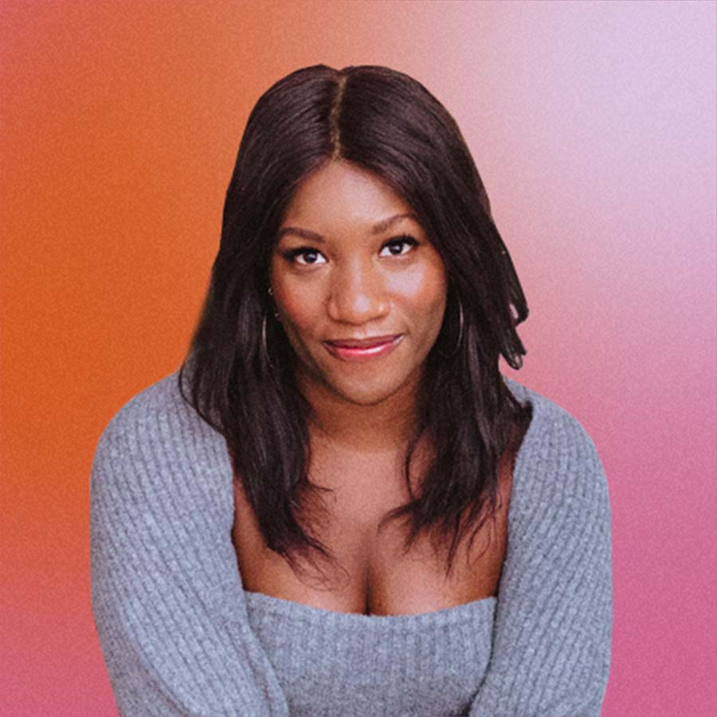
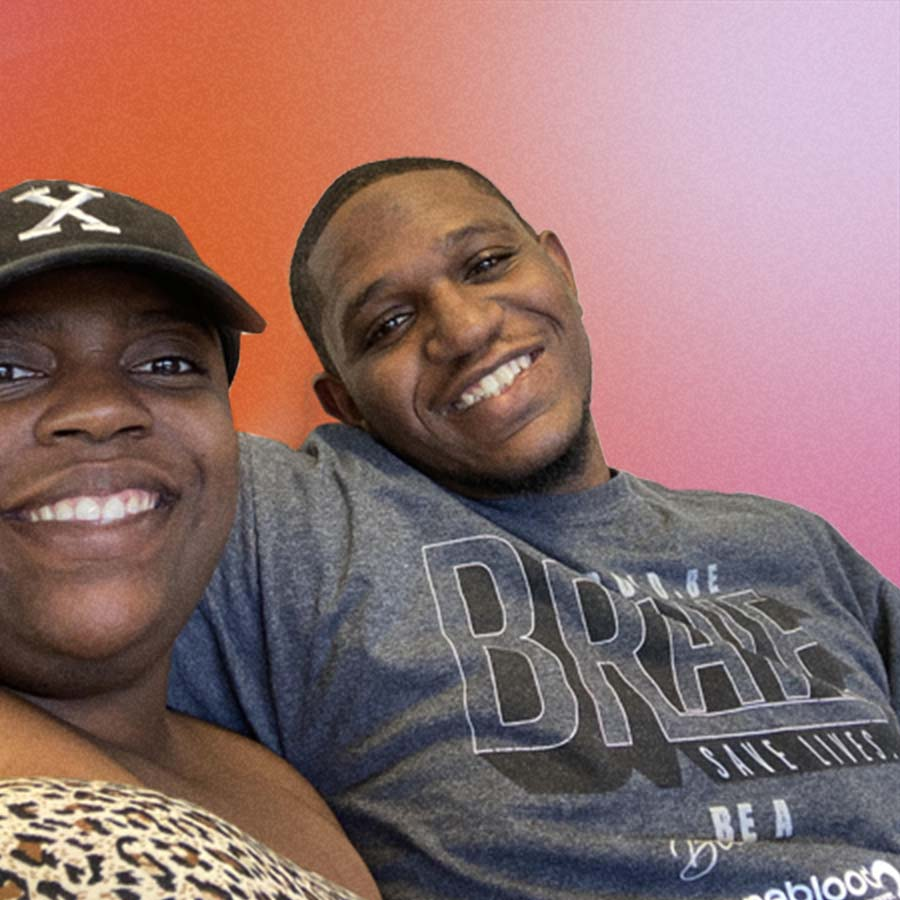
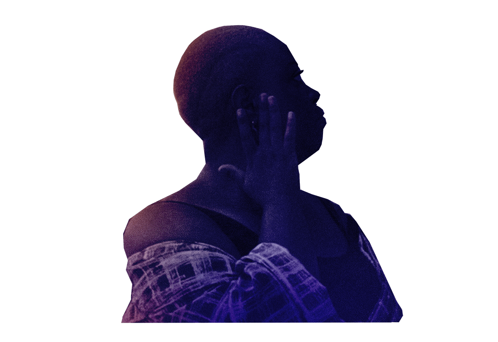
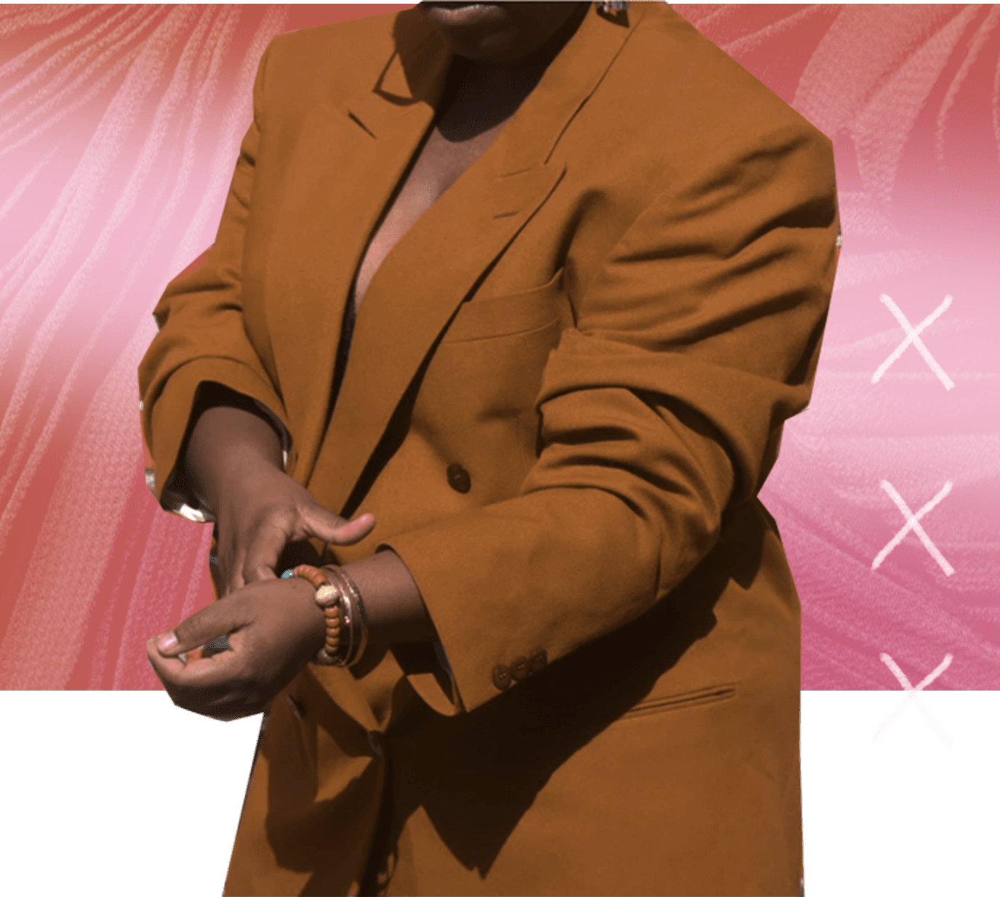
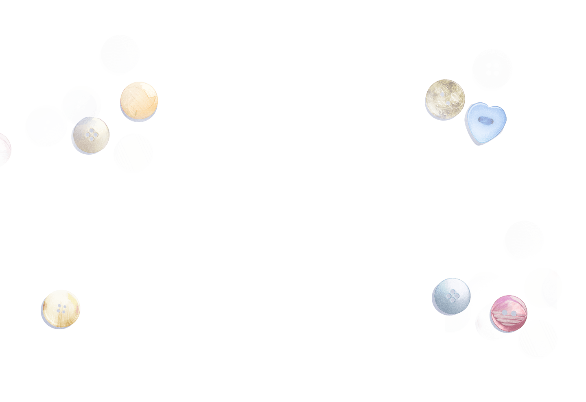
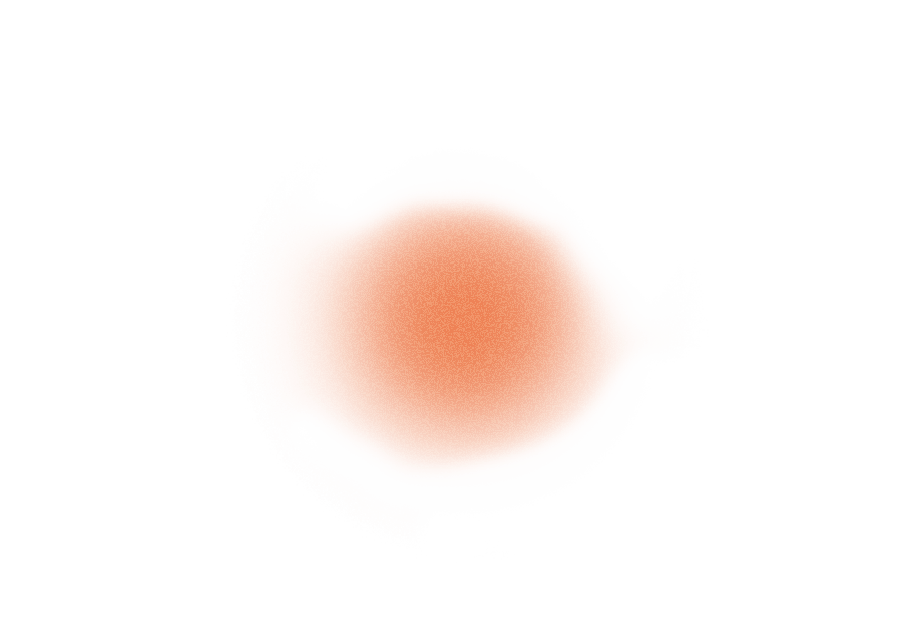
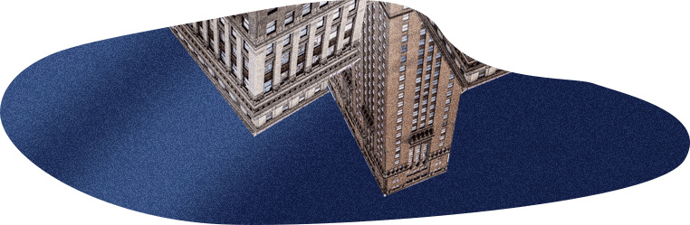

Episode 2
Carla
Finding the courage to make the change you want to see in the world.
Still in the sunshine state, Danielle travels north to Jacksonville to speak with Carla La’Vette Brown. A long-time lover of vintage clothing, she’s spent years let down by the lack of size and gender inclusivity in the industry. Here’s the story of how she took charge, and created the change she’s long dreamt of seeing.
Meet the People

We’re all taught a story has three parts.
But life just isn’t that linear.
What happens when the
middle
is just the beginning?
I’m Danielle Prescod. This is
a Vox Creative production with Straight Talk Wireless.
Podcast production is a lot.
A lot of people, a lot of microphones, a lot of extra personal questions.
But within minutes of sitting down in Carla LaVette Brown’s apartment in Jacksonville, Florida, she went from amateur to expert.
Like, here’s what we got when I asked her to introduce herself:
I'm Carla La'Vette Brown. I'm from Jacksonville, Florida. I stopped going to school to start a business that I felt like I could thrive in and that I could build a community of people with. I am Merry Brwn Girl, and this is More Than This.

[Surprised and impressed reaction from group, including laughter, her apologizing, and these soundbites:]
Carla just took us on a wild ride
I’m about to propose
So I guess we’re done
That was perfect, did you know you were good at this?
Oh my god!
Episode 2
Act 1
We found ourselves in Jacksonville because Carla is the founder of Merry Brwn Girl, a business born out of her infectious love of thrifting.
Carla
When I started thinking about doing the reselling and birthing Merry Brwn Girl, I wanted to really feel like how I felt when I was younger, like when I would go to the thrift store. I wanted the fun of it.
I just want people to feel like, welcome. There's something there for everybody. Because when you go to a thrift store, there's something there for everyone.
Danielle
And you built inclusivity like, into your business. Like, your clothes are gender neutral. They're for everyone. And why was that important to you to incorporate?
Carla
I have a lot of friends within the LGBTQ+ community. Whether they are transgender, or they're lesbian, or they're gay or bisexual, however they choose to dress, or just androgynous, that's their prerogative. It's what makes them feel comfortable.
If you're a masculine-facing woman and you want to shop out of the men's department, by all means, do so. And guess what? I'm going to make sure I have masculine-facing pieces on my site for people like you. And I'm not going to label them as men's. I'm not going to label this as women's, because I know there's people who shop in those areas who may not be that way.
After 15 years in the fashion industry, what I know is that - besides your gender identity - your size and your spending power are the two things that dictate whether you’re in or out.
Like most of us, Carla has been a few different sizes throughout her life, but today she’s a size most designers don’t even bother to make.

And those are the two things Merry Brwn Girl wants to change.
Danielle
So, you, having experienced various different body types in your life, do you think that makes you more empathetic to people who feel like they are outside of the fashion scope, or they're outside of representation?
Carla
Most definitely. I think it not only makes me feel empathetic, but it definitely gives me a connection to them on a different type of level.
I used to shop for a living in my past life as a fashion editor. Knowing where to find a deal - and the perfect piece - is a byproduct of that career. But for Carla? The hunt for the right piece may as well be a sport. And the thrift store is her arena.
Triveon
Like it’s completely night and day and as soon as she walks through them doors, it’s like she becomes a whole different person who’s just
like
Zen,
just focused
That’s Triveon, Carla’s partner and full time-cheerleader. And I experienced that focus in Carla firsthand as we pulled up to her favorite thrift store in Jacksonville.
Carla
And here we are.
Car to the thrift slowly builds - humming, doors closing, car dinging Car door slams closed, and footsteps crunch on the gravel.
Outside, Carla clues me in on strategy: What different color tags mean, the “fill a bag for a dollar” bin, which displays are skippable, and where the hidden gems are.
Carla
Let's go from here, and let's go to the plus size area, because that brings me joy. But real quick. Okay. I was trying to figure out...Yes, you know, I thought this was a windbreaker. And I've been looking for a windbreaker in teal for myself. And so yeah—
Danielle
—but it caught your eye.
Carla
Yeah, it caught my eye when we were talking.
Danielle
I love that. You've already seen it before, though. Yeah. So are you quite familiar with a lot of the items in here?
Carla
And it breaks my heart sometimes, because I'll see an item and I'm like, why didn't somebody get that, like this?
VO layered over the continued convo below:
What I thought was going to be a quick peek at a pretty gold dress morphs into a dreamscape. Carla’s telling me how you can cut the dress, tailor it to accentuate a waist, and post it on Instagram as a Reel to show the finished product.
And with every vision, she’s automatically thinking about teaching others to see the possibilities, too.
Dropped levels to a whisper so we know the convo is still happening
Carla
Because this literally looks like the dress that she had on. I think it was her Freakum dress video visual that she did. And it was like, when she first came out with the sequence. I would have did that and remixed it, but I probably would have cut this going up the length and then probably like tied it a little bit. Because I like this to situate my hips.
Danielle
Okay
Carla
So that's how I would have did it.
Danielle
Do you always see some sort of like content plan that goes along with a dress? Because that was a whole vision.
Carla
Yeah, I do.
Danielle
Okay, this is cute.
Carla
Yeah, I kept looking at it. (giggles)
Danielle
What do you like about this?
Carla
I love the color, it’s very deep, kind of like a Dijon mustard vibe. The button on the back though, I would definitely take that off. I have a big container of buttons that my mom gave me years ago, from my dad's mom. And I would just take that off, put another button onto it. Because you're not going to find this button anywhere else. I can guarantee you you won’t, because she's been gone for literally over 20 years

Here’s where Carla’s eye comes into focus.
Where some might just see a $5 dress, she sees the whole story, instantly.
Triveon
It's hard to keep up, trying to keep up with her is like trying to play a full pickup game with LeBron James and Alan Iverson and AD, all those guys.
Speaking of teams, Carla’s is stacked.
Triveon helps with shipping - and modeling, though I’m breaking a code of secrecy by telling you that.
And then there’s Cayana, Carla’s 16-year-old niece, who has been by her aunt’s side since the very beginning...
Black Friday 2020.
Carla
My goal for that day was just to make one sale. That's it. That first sale came through in the early hours of the morning.
I watched it go from online user, active cart, checkout. And when it hit checkout and I heard the ding, I ran over to her. Cayana was like, “what?” and I made her get up and I came and I showed her the sale.
Cayana
She was screaming, laughing. And it made me excited for her to know that she can finally do something that she's been wanting to do for a long time.
Carla
Because that one sale solidified that you got this, you can do it. But that one sale turned into 20 sales. The next day, that turned into 10 more sales. So then that meant I had to go find more stuff to put on my website. And I was like, “y'all really like me!”
Carla’s first Black Friday blew past every goal she set for herself. Even after that and the momentum that’s followed, she’s still somewhat surprised at her own success.
But before she got here, her path was full of detours, departures and even... gators. But before we can talk about gators, we need to talk about grandmothers. Specifically, Carla’s.
Episode 2
Act 2
Carla’s Granny grew up in a small town on the southern tip of Florida. Official name: Belle Glade. But locals have their own name for it.
Carla
They call it the Muck. We're from the Muck. And when you think about grass, and mud, and all of that, it's very mucky and nasty. Her work ethic came from that.
Carla’s grandmother was able to fully retire when Carla was a baby, and that’s always been a real point of pride for her.
And more than that even -- it’s been the blueprint.
Carla
She retired when I was 18 months old. You see a lot of people retire, and then they have to go back to work because they didn't make smart financial decisions. You know, you have these dialogues with her about investments, and what it takes to buy a house, and what to do with your credit.
Carla’s granny infused that work ethic into the genetic code and passed it down to Carla's mom, who has worked at the same company for 42 years.
Carla
I commend her for it. You know, my mom was the only Black person working at her company. And that takes a lot, showing up to work every day, catching the bus, having to catch rides to work.
And I mean, now, of course, you know, she's successful. She's the longest-standing employee there. But it takes a lot to work somewhere that long. I can't do that.
Now here’s where things get a little meta. Not only did her mom’s job show Carla what it meant to work hard, it also - in a roundabout way - revealed to her the very place that would set her on her path.
That thrift store we visited? That’s where it all started. All because her mom’s office was right behind it.
Carla walked into that thrift store, an saw way more than a thrift store. It was a playground of opportunity, a way of making things uniquely her own.
So, with lunch money in hand, Carla started thrifting. A couple times a week at first, but pretty soon, she was going every day throughout middle school. And it didn’t take her friends long to start forking over their lunch money, so that Carla could bring back outfits for them too.
Carla
They were the first ones to give me money to go and shop for them. And so they ended up giving me like, way more money than I needed. I tried to give them the change. And they wouldn't take it in. They was like, "No, just keep it." So I was like, "Okay."
But despite the fact that she was the go-to personal shopper for her friends, Carla never saw herself as an entrepreneur. Even after all the financial savvy her Granny had instilled in her.
She had something else on the brain: law and order.
Seriously! Our warm-hearted, thrift-savvy Carla. Her plan was to go into the Coast Guard and work in the narcotics department.
Her family had the same reaction I’m sure you’re having right now.
Carla
Like they were so upset with me. They thought it was the worst thing in the world. I literally feel like my granny and my uncles prayed me out of wanting to go into criminal justice.
So Carla did something different. Really different. She secured an internship at the Department of the Interior, and instead of making copies or fetching coffee, she jumped right into the deep end: Everglades National Park.
That really remote, 1.5 million-acre swath of wetlands. Home to fewer than 500 people, and more than 200,000 gators.
This place.
[Full, shocking drop into the textures of the everglades. Bugs, water, echoing creaks.]
Carla
So, I knew I was out of my comfort zone when we first pulled up to the house. There were so many bugs flying around. I had went on hikes before, and I had went and walked trails and been one with nature and all of that fun jazz, but I had never lived in a national park where I had no reception.
Danielle
Did that scare you, like your first experience with isolation?
Carla
Yes, it scared me a lot. Especially hearing the bullfrogs at night, hearing the snakes go through the grass. It was scary.
Carla
Yeah. But then it became serene. I ended up liking it.
Carla
I think after I went on my first slough slog, it went from fear to enjoyment. And it was because I knew that there was nothing there that would harm me in any way.
Danielle
Can you tell us what a slough slog is?
Carla
A slough slog is a wet hike. It's when you hike through cypress trees, mostly. And I'll never forget when one of the interns that was there, her name was Daniela, and she said, "Carla, don't look down. But just step over the log." It wasn't a log. It was an alligator tail that I was getting ready to step on. And I had no earthly idea. And my little combat boots that I had on, that I was going to step on it and wake everybody up.
That’s Carla.
Out in the swamp, she faced danger, and simply...stepped over it.
Danielle
I love how you wanted to find a safer career, and then you ended up trooping through the Everglades and alligators.
Carla
Yeah, they didn't say that prayer. They prayed for me not to go into law enforcement, but they definitely did not pray for me to step over an alligator tail. I didn't tell them not to pray that prayer. SO...
At this point, you’re probably wondering why on earth Carla was sent to the Everglades in the first place.
It wasn’t for slough slogging.
She was on assignment.
Carla
And they said, "Okay, we want you to create a curriculum based on the African American history of the Everglades National Park, and we have nothing for you."
Figure
it
out.
So that led to me doing a lot of slough slogs, like hunting through woods. And I found all of these ruins.
Carla
I had to draw maps of Florida. All right. So this is where your school is. This is where the Everglades is. I'm going to give you a map, and I want you to think about different slaves running through the Everglades. And it was — it's amazing now that I'm sitting here saying like, wow, like, all right, I did — I took them through that experience, and they're only in second grade.
But going through, it was
just so much anxiety.
It was a lot.
Remember, Carla was just an intern.
That anxiety was only made worse by the growing loneliness she felt as one of only three Black team members, a scenario I am very familiar with.
Carla
It was very scary, because I have always been surrounded by people who look like me. And so, when you're surrounded by people that look like you and think like you and act like you, and then you're no longer surrounded by that, it's, it's shocking. I mean, I went to an HBCU. And we were the majority.

I’ve had a very different life than Carla. I was never around people that looked like me. I mean, even my memoir is called Token Black Girl. I’ve always just assumed all of my work environments would be mostly white.
So I can only imagine what that culture shock felt like.
Carla
I had never went through that before. I never went through feeling so lonely and not being able to vocalize it to people that was around me, because I knew they probably wouldn't understand. And it was no offense to them. And I didn't ever want them to feel like, you're doing something wrong, because they never did anything wrong.
They were welcoming.
They were warm.
But I just felt so alone.
That’s a very particular kind of isolation. But still, Carla excelled. And her curriculum ended up in public schools all throughout southern Florida.
Soon, it was time to swap the swamp for an office. Carla landed a desk job, working in payroll. And she liked it a lot, actually, but it felt familiar.
Having watched her mom work for one company for 42 years, Carla knew it wasn’t the life for her. She wanted more than that. She wanted her Granny’s kind of independence.
But sometimes, our leaps take time.
Carla
I'm very cautious. And I haven't always been confident within myself. I definitely overthink a lot. I'm a—if you look up overthinking in the dictionary, my picture would pop up. Like, it'd be me smiling with a bald head, because I overthink a lot of different things, which then leads to me overtalking, so yeah. Sorry.
Danielle
No, that's totally fine.
Carla
'Cause I started overthinking that.
Danielle
It was real time. We saw the overthinking happen.
Carla
Like, yeah.
Danielle
Did you overthink starting Merry Brwn Girl, or did it feel very natural?
Carla
I definitely overthought it, and I know I did, because I was so scared, where I didn't think I could do it on my own. I had to recruit, you know, like a friend who was also doing reselling at the time to come and help me, because I didn't think I knew what I was doing.
So she teamed up with her friend to develop a second-hand clothes business while still working a full-time job. But the progress was slow. Something was off.
Carla
I mean, but even when I had the partnership business, part of that feeling was, I'm doing everything. And so, I should just do it on my own. But it's different when it's just you, and it's nobody else, because then when it fails, it's just you to pick up the pieces. It's just you to pat yourself on the back and say, it's gonna be okay.
At this point, Carla was so close to taking the leap and starting her own business.
But she was still teetering -- a feeling I think we can all relate to.
Episode 2
Act 3
The sounds of a busy Manhattan street with vendors selling their wares. This hustle and bustle carries us from the previous moment to a new time and place.
But then there are moments in your life when things just click.
That moment happened on a vacation to New York with her friends
And Carla did what she does best. She saw the limitless potential in something other people might not look twice at.

Carla
We were leaving brunch, and there was this lady on the corner, in Brooklyn, you know, just selling her items. And I mean, the stuff was dope. And I was like, I can do that. If she could sit in the heat in New York, I can do that too. It wasn’t that all of a sudden taking the leap seemed easier.
Carla knew it was going to be hard work.
But Carla LaVette Brown is no stranger to hard work.
And that knack she has for noticing things?
Well, it applies to gut feelings, too.
Carla
My contract came to an end with my job. And I decided, instead of finding another position, I just kind of wanted to see what could happen. And with seeing what could happen, I'll never forget the day I decided to stop, and I looked at my email, and I had an email for this podcast.
YES,
she’s talking about getting an email from us, the More Than This production team.
Carla
And I was like, now, you know what, if this isn't fate, I don't know what is. And it was a Friday, it was April the 16th. I'll never forget. And I was like, all right, I'm doing it, I'm doing it, I'm doing it. I'm gonna just wing it. And I'm gonna do what I have to do for Carla.
Danielle
But you still were scared. So how did you overcome that fear?
Carla
It was a lot of prayer, a lot of meditation, and a lot of affirmations. And then I started thinking about when I was younger, I was a part of this mentoring group. And we had this slogan, "You are smart, strong, and bold. You are an overcomer."
And I started saying that every morning when I woke up,
"You are smart,
strong
and bold.
You are an overcomer."
Over my career, I've interviewed a lot of people. And one thing that’s pretty common, even among people who seem to have it all together, is that we all crave reassurance.
But sometimes we have to give that to ourselves. And when we do, it can be a catalyst for the people around us to do the same.
Remember Cayana, Carla’s niece?
Well at 16, she’s considering becoming an entrepreneur herself.
Cayana
I never really thought of being an entrepreneur until I saw her start her own clothing business. And I'm like, oh, maybe that's something I could do in the future potentially, and it kinda like motivated me and to start doing things on my own.
Cayana tells me she’s thinking about going to cosmetology school. She says she likes to do hair. And I’m impressed, because it’s in that moment that I realize that Cayana did her own twist out.
But right as I’m about to move on, Carla does what Carla does.
Carla, off mic
Can she talk more about that? Because she doesn’t just do her own hair.
Room laughs.
“Ok, producer Carla! Merry Brwn Girl Productions!”
© 2021 Vox Media, Inc. All Rights Reserved
Editorial Team
Art Direction / Illustration
Lauren O’Connell
Product Design
Uy Tieu